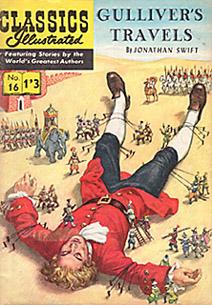

1726

Jonathan Swift(1667-1745) sieht einen automatischen Bücher-Schreiber in "Gulliver's Reisen" voraus. In dem Buch kommt das Zwergenland "Liliput" vor. Seitdem ist der Begriff "Liliputaner" Allgemeingut.